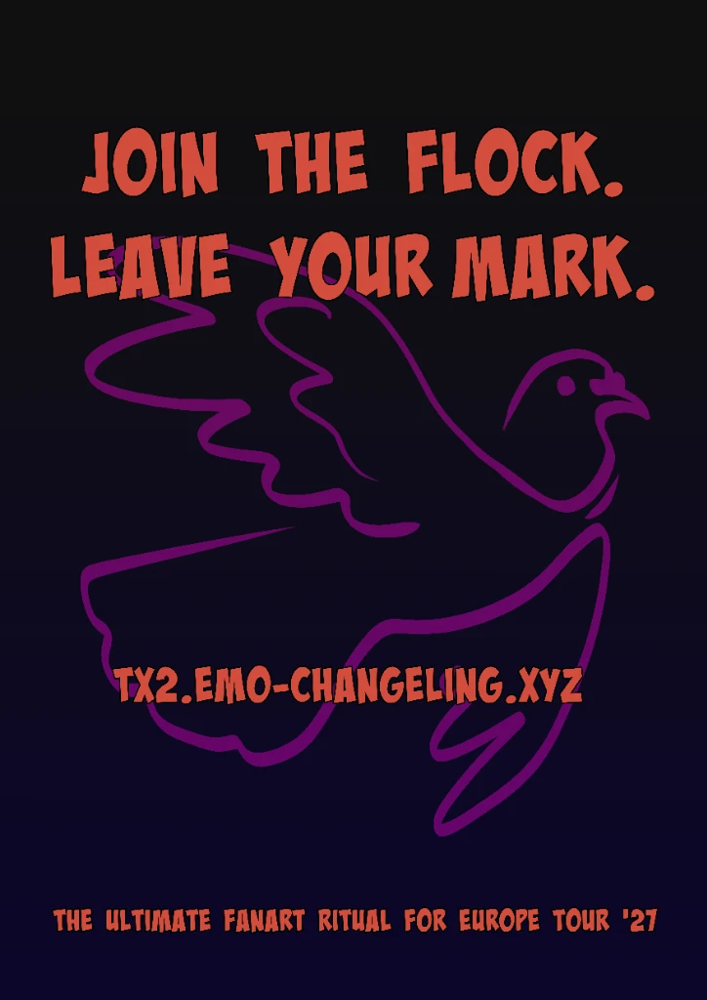

🎬 MEDIA & RITUAL ARCHIVES
Welcome to the multimedia hub of the TX2 Pigeonification Ritual. Here you will find official video highlights, teaser shorts, and community clips documenting our campaign for the 2027 European Headliner Tour.
🎬 MEDIA I MATERIAŁY FANOWSKIE
Witaj w centrum multimedialnym Rytuału Gołębiowania TX2. Znajdziesz tutaj materiały wideo, zajawki shorts oraz klipy społeczności dokumentujące naszą akcję przed europejską trasą koncertową 2027.

TX2 - Featured Video YouTube
Stream and watch the official release without automated playback.
TX2 - Wyróżnione Wideo YouTube
Obejrzyj oficjalny materiał bez automatycznego uruchamiania.
TX2 Short Shorts
Quick teaser and tour update in vertical format.
TX2 Short Shorts
Krótka zajawka i wieści z trasy w formacie pionowym.
TikTok Ritual Clip TikTok
Community clip from @reverse.changeling on TikTok.
Klip Rytuału na TikToku TikTok
Klip społecznościowy z profilu @reverse.changeling na TikToku.